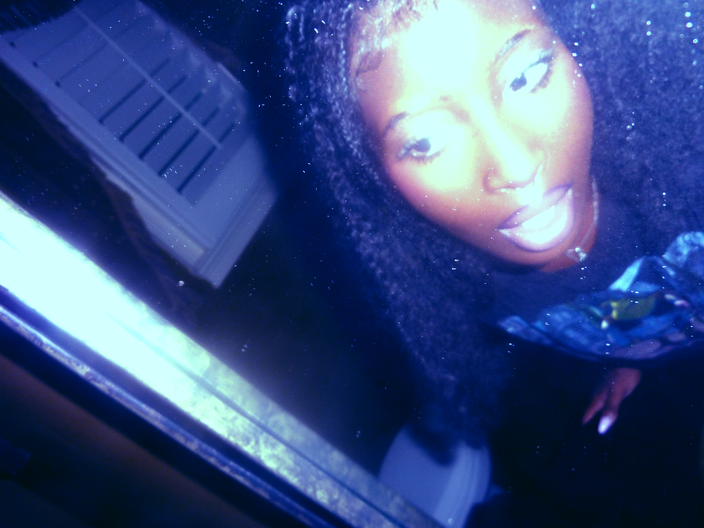

01 / OPEN CREATIVE COLLABORATION
Enter
the forest.
Music, visual worlds & strange little things.

SCROLL TO DISCOVER ↓
TOSKAROSE / ARCHIVE

My past music doesn’t fully represent who I am now — but it’s still me.
Start with the newest work. Move backward through the years. Click a piece to reveal its name and year, then press play to listen.
SOUND / 01—08
NEWEST → OLDEST
2025
2024
2023
VISUAL / 01
GABRIELLE APLIN — PANIC CORD
02 / REFERENCES
YOUTUBE REFERENCES ↗
01Gabrielle Aplin — Panic Cord (Hucci Remix)RHYTHM / ATMOSPHERE
02Clara La San — In This DarknessTEXTURE / NIGHT
03Towkio — Morning View ft. SZAGLOW / MOTION
04vcr-classique — fiji babeSPACE / MEMORY
05Her's — Cool With YouWARMTH / COLOR
06Julia Wolf — In My RoomINTIMACY / VISUAL
07Kingdom — Down 4 Whatever ft. SZAENERGY / SPACE
08Oklou & FKA twigs — viscusTEXTURE / FUTURE
09Girl Ultra — MentirasmentirasMOOD / MOVEMENT
10Shygirl — SaveEDGE / ATMOSPHERE
11FKA twigs — Lights OnLIGHT / VULNERABILITY
12Sinnerella — Eyes Without a FaceMOOD / CHARACTER
13702 — Gotta LeaveR&B / MOMENT
14Alex Mali — Start It UpGLOW / CONFIDENCE
15Mura Masa — Second 2 None ft. Christine and the QueensRHYTHM / ENERGY
Looking for the
right sound.
Producer, musician, visual artist, weird idea haver.
GET IN TOUCH ↗